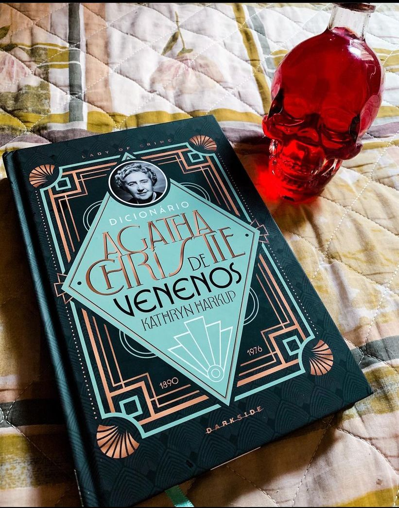

Dicionário Agatha Christie de Venenos
(Kathryn Harkup - Darkside)
⭐⭐⭐⭐
Se assim como eu, você também adora Agatha Christie esse livro é indispensável na sua coleção. Afinal, Agatha gosta de um veneno né ? Ainda por cima a Darkside não deixou a desejar e a edição está belíssima.
Kathryn química e fã da “Dama do crime” escreveu um livro muito bem elaborado, da pra sentir que houve pesquisa tanto em relação aos venenos usados em sua obra, quando a própria vida e histórias da autora.
O livro traz 14 venenos relacionados com diversos livros da autora e em cada capítulo temos contato com o veneno e com a sua história, isto é, fala-se sobre como foi descoberto, e todas informações pertinentes. Agatha Christie, a grande dama do romance policial, se deleitava ao usar veneno para matar as infelizes vítimas em seus romances.
O livro é um prato cheio para os amantes da Agatha Christie quando quem precisa de material de apoio ou quer saber mais sobre venenos ! O livro me ganhou e eu indico para todo que quer conhecer sobe venenos de uma forma que não é maçante, e sim fantástica!